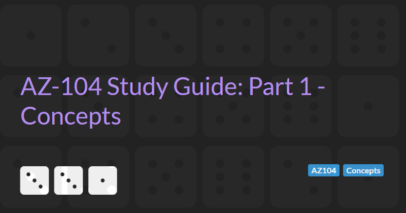

Azure Concepts
The AZ-104: Azure Administrator Associate certification requires subject matter expertise in implementing, managing, and monitoring an organization's Microsoft Azure environment, including virtual networks, storage, compute, identity, security, and governance.
In part 1 of this guide we will cover core concepts and the core services:
- Virtual machines
- Storage
- Virtual networking
Virtual Machines
Virtual machines are the engine of Azure. The capabilities of virtual machines are:
- Windows or Linux OS
- Can be remotely connected using Remote Desktop (RDP) or SSH
- Looks and acts like a real server, but isn't
- Can be placed on a virtual network, arranged in availability sets, placed behind load balancers
- Install whatever software you wish
- Can be created in a few minutes
- Are responsible for applying security patches and updates
A number of VM abstractions are built on top of VMs, including:
- Azure batch
- Virtual machine scale sets
As an alternative (more developer friendly, higher level of abstraction) to VMs we can use App services. Underneath the hood App services capabilities are implemented by VMs. App services have the following capabilities:
- Web apps or container apps
- Windows or Linux OS
- Fully managed - no ability to remote control but no requirement to manually update either
- Support a large number of run-times: .NET, .NET core, Java, Ruby, Node.js, PHP, and Python
- Lots of benefits in scaling, continuous integration, deployment slots, integrates with Visual Studio
As well as App services, Azure VMs also provide the underlying compute for other Azure "microservice" offerings including:
- Service Fabric
- Azure Functions
- Azure Logic Apps
- API management
- Azure Kubernetes Service (AKS)
Storage
Fundamentally storage is the capability to store files on discs in Azure. The basic capabilities include:
- Create storage accounts up to 5 PB
- Cost nothing to create, charged based on storage used
- Blobs, queues, tables, and files
- Various levels of replication including local and global
- Storage tiers to manage costs (hot, cool, archive)
- Managed (for VM disks) or unmanaged
A number of Azure Data capabilities are built on top of Azure Storage including:
- Azure SQL Database
- Azure SQL Managed Instances
- Synapse Analytics (SQL Data Warehouse)
- Cosmos DB
- Azure Database for MySQL
- Azure Database for Postgres SQL
- Azure Database for MariaDB
- Azure Cache for Redis
Virtual Networking
The capabilities of Azure Virtual Networking includes:
- Connectivity
- Virtual networks (VNet)
- Virtual WAN (wide-area network)
- ExpressRoute (VPN)
- VPN Gateway (point to site or site to site)
- Azure DNS
- Peering
- Bastions (secure RDP)
- Security
- Network security groups
- Azure Private Link
- DDoS protection
- Azure Firewall
- Web application Firewall (WAF)
- Virtual Network Endpoints
- Delivery
- CDN (content delivery networks)
- Azure Front Door (global traffic routing)
- Traffic Manager (L7 load balancer)
- Application Gateway (L4 load balancer)
- Monitoring
- Network Watcher
- ExpressRoute monitor
- Azure Monitor
- VNet Terminal Access Point (TAP)